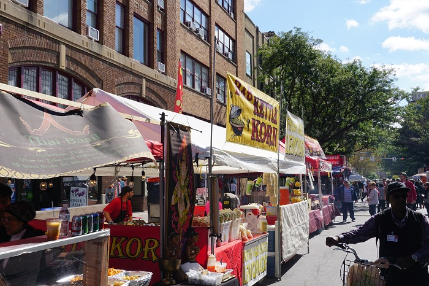

From delicious local restaurants to scrumptious stalls, you'll discover a variety of food options sure to please any pallete. Whether you're hankering after kettle corn, Tibetan dumplings or just a slice of pizza, Ithaca Apple Harvest Festival's got you covered!
Here are some of our
favorite food vendors:
(Pssst... click on the vendor names to check out their websites!)
American
African
Asian
- Lao Village
- Let's Roll Gourmet Egg Rolls
- Thai Basil
- Tibetan Momo Bar
Caribbean
- Trini Style
Coffee
Festival Food
- Kettle Corn Shoppe
- Gourmet Caramel Apples
- B&B Kettle Corn
- Silo Food Truck
- Lou's Covert Country Store
- Playland Amusements
Indian
Mediterranean
Mexican
Pizza